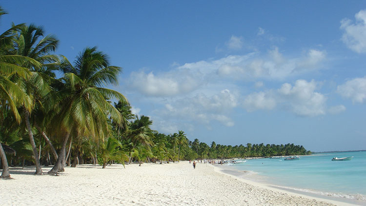
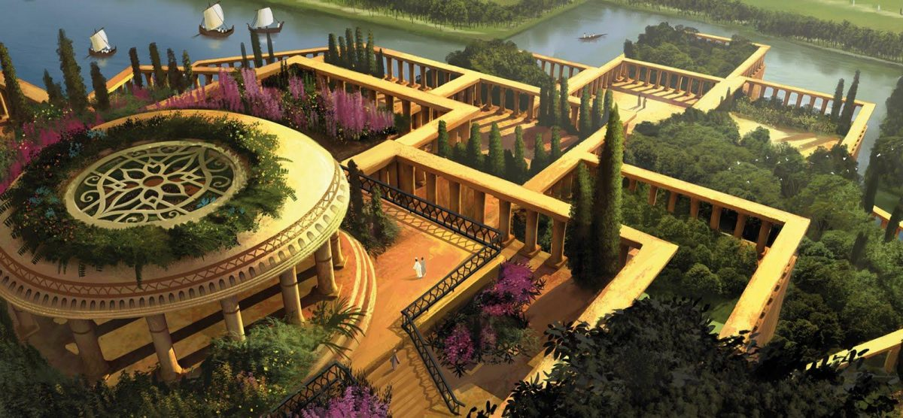

28 de julio 2019 - Santo Domingo, R.D.
Situada frente a las costas de Bayahibe, dentro del Parque Nacional Cotubanamá, corresponde a una de las islas más grandes de República Dominicana, famosa por sus playas de ensueño, donde conjugan arenas blancas, aguas turquesas y arrecifes coralinos. La más famosa entre ellas es Canto de Agua.
Saona, también cuenta con varios yacimientos arqueológicos y cuevas de la cultura taína, como la de Cotubanamá. A pocos metros de la costa, uno de sus atractivos más famosos, es la llamada piscina natural, donde es posible sumergirse entre fondos marinos que destacan por su transparencia y biodiversidad, con innumerables especies como lo son las estrellas de mar.
25 de julio 2019 - Madrid, España
Aunque no hay mucho sustento histórico sobre esta maravilla de ser cierto se podría decir que estaba dentro de los lugares más hermosos del mundo, estamos hablando de Los jardines de Babilonia.
Los Jardines Colgantes de Babilonia son una de las Siete Maravillas del Mundo Antiguo, y fueron construidos en el siglo VI a. C durante el reinado de Nabucodonosor II en la antigua ciudad de Babilonia (Babel de los textos bíblicos), a orillas del río Éufrates (Mesopotamia). Las aguas para regar las plantas eran traídas desde las orillas del río Éufrates ,que se encontraba en las faldas de la montaña. En los jardines se plantaban palmeras y árboles frutales, como el dátil y los cocos.
Un joven de apenas 27 años de edad, con mucho interés en la tecnología, especialmente en el ambito de desarrollo de aplicaciones web. Actualmente es egresado de la Universidad Cátolica Santo Domingo, se desempeña como gerente de tecnología en una constructora de estruras metálicas y está en el proceso de certificarse como desarrollador web en Next University.